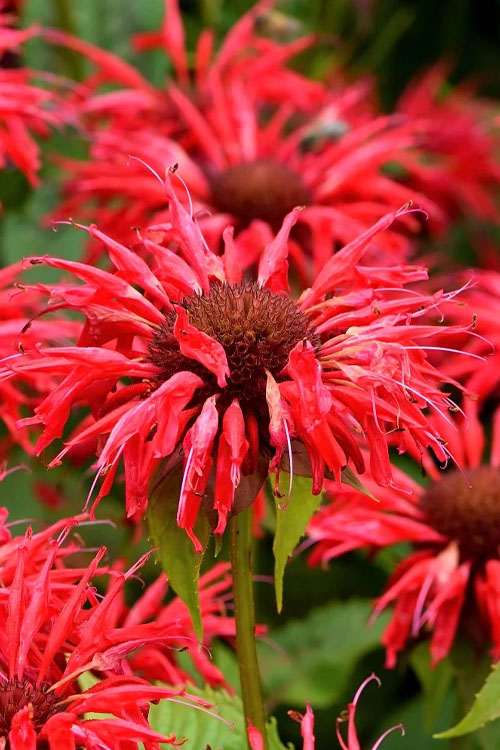
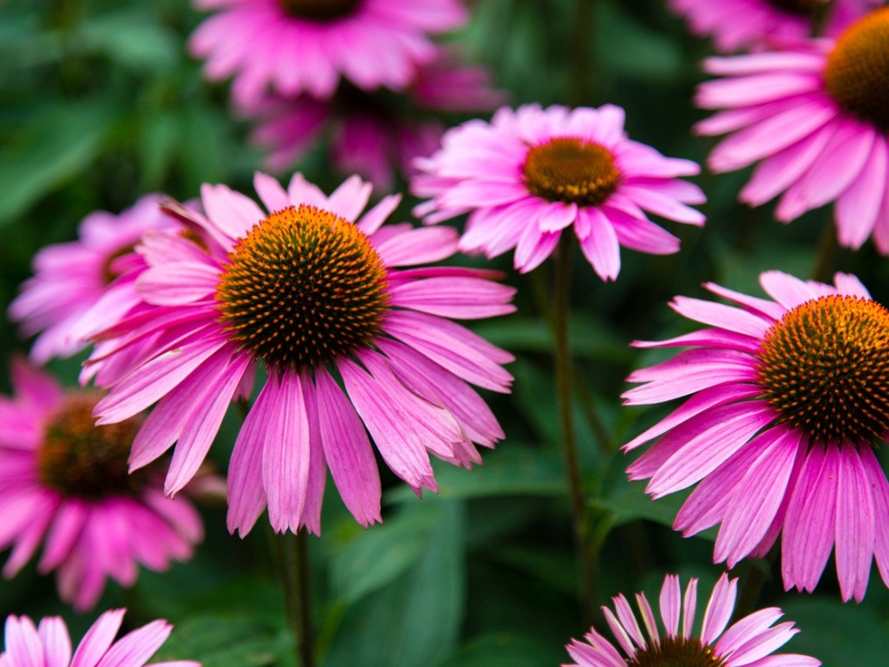
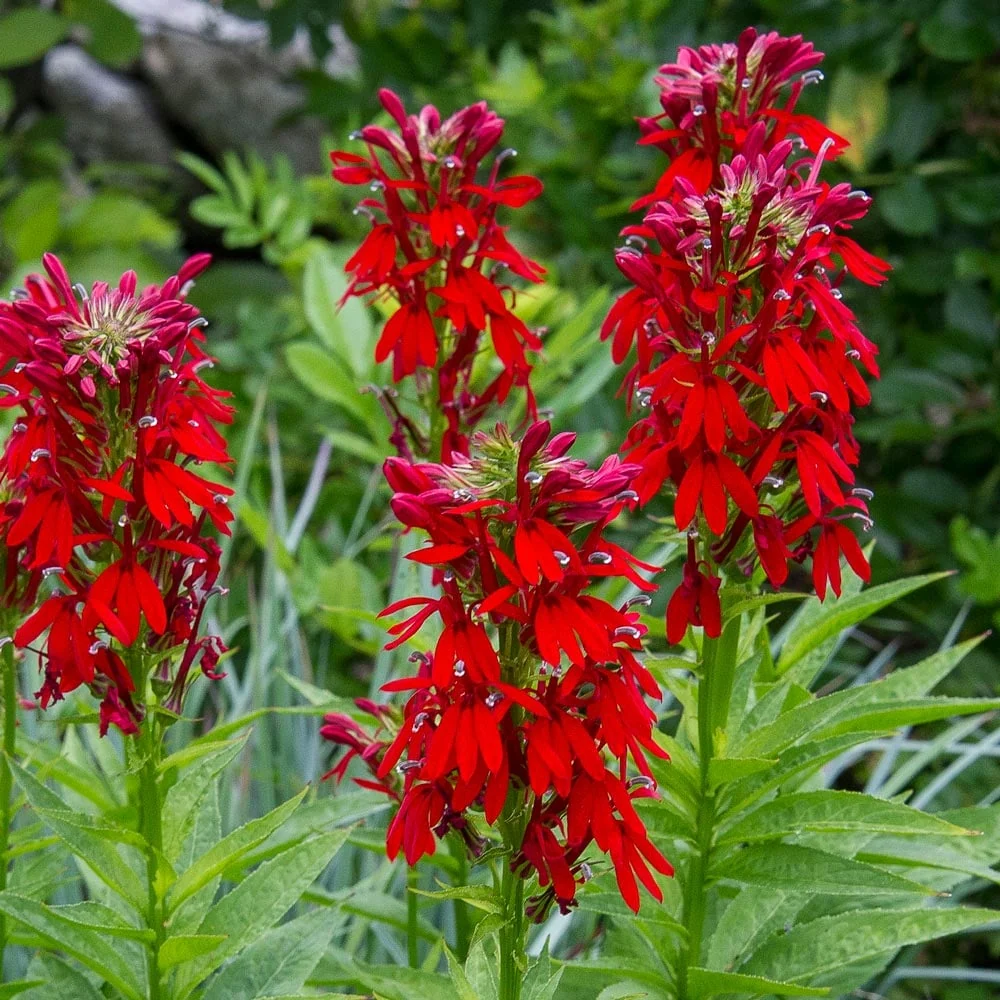

- Mountain-laurel
- Scientific name: Kalmia latifolia
- Kalmia latifolia, the mountain laurel, calico-bush, or spoonwood, is a flowering plant and one of the 10 species in the genus of Kalmia belonging to the heath(er) family Ericaceae. It is native to the eastern United States. Its range stretches from southern Maine to northern Florida, and west to Indiana and Louisiana. Mountain laurel is the state flower of Connecticut and Pennsylvania. It is the namesake of Laurel County in Kentucky, the city of Laurel, Mississippi, Mount Laurel, New Jersey, and the Laurel Highlands in southwestern Pennsylvania.
- This shrub needs its shallow roots to stay cool, so mulch and keep your plant well-watered, especially during very hot, dry weather. An organic fertilizer like Holly-Tone, which is formulated for acid-loving plants, can be applied in the spring to enhance flower production

- Butterfly Weed
- Scientific name: Asclepias tuberosa
- Asclepias tuberosa, commonly known as butterfly weed or pleurisy root, is a species of milkweed native to eastern and southwestern North America. It is commonly known as butterfly weed because of the butterflies that are attracted to the plant by its color and its copious production of nectar.
- It requires at least eight hours of full sun and well-draining soil and can handle a wide range of temperatures, from freezing to high heat.

- Scarlet beebalm
- Scientific name: Monarda didyma
- Monarda didyma, commonly known as scarlet beebalm or bee balm, is a species of flowering plant in the family Lamiaceae. It is native to eastern North America and is widely cultivated for its vibrant, tubular flowers that attract hummingbirds and butterflies.
- It prefers full sun to partial shade and well-draining soil. Regular watering and deadheading will promote continuous blooming throughout the summer.

- Purple coneflower
- Scientific name: Echinacea purpurea
- Echinacea purpurea, commonly known as purple coneflower or eastern purple coneflower, is a species of flowering plant in the family Asteraceae. It is native to the central and eastern United States and is widely cultivated for its distinctive, daisy-like flowers.
- It prefers full sun to partial shade and well-draining soil. Regular watering and deadheading will promote continuous blooming throughout the summer.

- Cardinal Flower
- Scientific name: Lobelia cardinalis
- Lobelia cardinalis, commonly known as cardinal flower, is a species of flowering plant in the family Campanulaceae. It is native to the eastern United States and is widely cultivated for its striking, tubular flowers that attract hummingbirds.
- It prefers full sun to partial shade and moist, well-draining soil. Regular watering and deadheading will promote continuous blooming throughout the summer.
